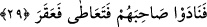
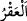

suretiyle olup, bir gün onlar gelip içecekler, bir gün de deve gelip içecek, anlamınadır.
Paylaştırma sebebi de, ya suyun az oluşu veya devenin çok iri oluşu nedeniyle diğer
hayvanların ondan ürkmelerindendir.
29. Arkadaşlarını çağırdılar, o da (bundan cür’et alarak) kılıcını kaptı ve deveyi
kesti.
“Arkadaşlarını çağırdılar, o da kılıcını çekip deveyi kesti.” Bu kişi Semûd kavminin
uğursuzu, Kudar b. Sâlif adında bir adamdır. Bu sebeple araplar kasaplık edeni, bu
adama benzeterek “Kudar” adını verirler. Çünkü, ileride geleceği gibi, mûcize deveyi
öldüren odur. Kudar b. Sâlif denilen bu adam, kısa boylu, kırmızı benizli, gök gözlü,
sarı tenli, çok kötü birisi idi. Ona hakaret olsun diye küçüklük anlamında “Semûd’un
kırmızıcığı” derlerdi.
Keşfü’l-esrâr adlı eserde, Ona “Semûd’un kırmızısı” denirdi, kaydı var. “Âd’ın
uğursuzu” da denmiştir. Arapların kıyâmete kadar uğursuz saydıkları kötülük
sembolüdür, denir.
Aynü’l-meânî’de, Secâvendî’nin dediğine cevap ortaya çıkmaktadır. Züheyrî de
şiirinde şöyle zikretmiştir:
Size hepsi de en uğursuz uşaklar verilir.
Henüz süt vermişken hemen ayıran Âd’ın kırmızısı gibi.
Doğrusu “Semûd’un kırmızısı” demektir.
“Kılıcı çekti,” ifâdesi, “cür’et etti” demekten mecazdır. Çünkü, kılıç çekmek bir
kişinin ancak büyük cüretlerle girişeceği tehlikeli ve çok zor bir iştir. “
/Akr” bir
hayvanı ayağından biçerek devirip yıkmaktır. Mânâ: “onların arkadaşları olan Kudar bu
büyük işe çekinmeden cüret ederek deveyi ayaklarından biçerek kesti,” demektir.
Âyet-i kerîme’deki “Arkadaşlarını çağırdılar” demek, “arkadaşları onu çağırarak
devenin geldiğini ve gizlendiği yere yaklaştığını söylediler,” demektir. Yahut, deveyi
öldürmeğe yönelince onu ürküttü, arkadaşları bunun üzerine Kudar’a seslenerek onu
cesaretlendirdiler. Ya da, deveye bir ok attıktan sonra “Mısda” adındaki kişi işte deve
önünde, vur! diye seslendi. O da vurdu.
Kâşifî şöyle demiştir: “Devenin kesilmesini Anîze Ümmü Ganem ve Sadûk binti’l-
Muhtar adında iki kadın teşvik etti. Sadûk amcasının oğlu Mısda’ bin Dehr ile birlikte
olacağı sözünü vermişti. Anîze ise kızlarından birini Kudar ile nişanlamıştı. Mısda’ ile
Kudar devenin geçiş yolu üzerinde gizlendiler. Deve su içtikten sonra döndüğünde önce
Mısda‘ yetişip bir ok attı, düşürüp devenin ayaklarını birbirine bağladı. Kudar da
gizlendiği yerden çıkıp kılıcıyla deveyi kesti. Deve düşünce onu parça parça edip,
halka dağıttılar. Onun yavrusu rikkatle üç kere böğürdü ve sadâsı göklere yükseldi.